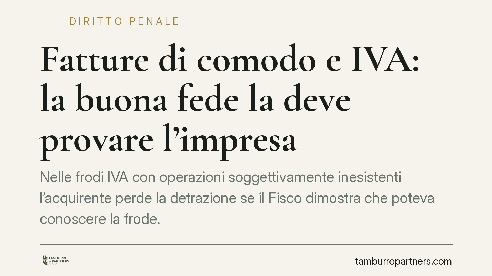

Fatture di comodo e IVA: la buona fede la deve provare l'impresa
Nelle frodi IVA con operazioni soggettivamente inesistenti l'acquirente perde la detrazione se il Fisco dimostra che poteva conoscere la frode. Secondo un recente orientamento della Cassazione, fatture regolari, consegne puntuali e visura camerale non bastano a provare la buona fede: serve la prova di una struttura operativa reale del fornitore. Un tema che intreccia profilo tributario e responsabilità penale.

Il caso e perché conta
Le cosiddette "operazioni soggettivamente inesistenti" sono tra le insidie più frequenti per le imprese in buona fede. Si tratta di acquisti realmente avvenuti, ma in cui chi ha emesso la fattura non è il reale fornitore: dietro la ragione sociale si nasconde una società cartiera, cioè un soggetto privo di struttura operativa, costituito al solo scopo di emettere documenti e intascare l'IVA senza versarla.
Il meccanismo è lineare. La cartiera fattura la cessione, incassa l'imposta e scompare senza versarla all'Erario. L'acquirente, dal canto suo, detrae quell'IVA. Il risultato è un danno per il Fisco, che si ritrova a rimborsare un'imposta mai entrata nelle casse pubbliche.
Una recente ordinanza della Corte di Cassazione (gli estremi esatti sono da verificare alla pubblicazione in massima ufficiale) ha ribadito un principio ormai consolidato: la regolarità formale della documentazione non equivale alla buona fede sostanziale.
Inquadramento normativo
Il diritto alla detrazione è disciplinato dall'art. 19 del DPR 633/1972. La giurisprudenza, in linea con l'indirizzo della Corte di Giustizia dell'Unione europea, ne esclude l'operatività quando l'acquirente sapeva o avrebbe dovuto sapere, usando l'ordinaria diligenza, di partecipare a un'operazione inserita in una frode IVA.
Il punto di riferimento unionale è duplice. Da un lato la sentenza Kittel (cause riunite C-439/04 e C-440/04), che nega la detrazione a chi era o doveva essere consapevole della frode. Dall'altro le sentenze Mahagében e Dávid (cause riunite C-80/11 e C-142/11), che tutelano l'operatore diligente: l'Amministrazione non può pretendere controlli che spettano a essa, ma può esigere che l'impresa si attivi di fronte a indizi concreti di irregolarità.
Sul versante penale, l'utilizzo in dichiarazione di fatture per operazioni inesistenti integra il reato di dichiarazione fraudolenta mediante uso di fatture o altri documenti per operazioni inesistenti, previsto dall'art. 2 del D.Lgs. 74/2000. Va tenuto distinto dal reato di emissione di tali fatture, disciplinato dall'art. 8 dello stesso decreto, che colpisce invece chi i documenti li rilascia. L'impresa acquirente, dunque, può trovarsi esposta sul fronte dell'art. 2.
Come si ripartisce l'onere della prova
Lo schema probatorio è articolato.
Spetta all'Agenzia delle Entrate provare, anche in via presuntiva, due elementi: che il fornitore era una cartiera priva di reale operatività e che l'acquirente, con la diligenza esigibile da un operatore professionale, poteva accorgersi dell'anomalia (la cosiddetta *conoscibilità* della frode).
Raggiunta questa prova, l'onere si sposta sull'impresa acquirente. A questo punto non basta esibire fatture formalmente corrette, DDT, pagamenti tracciati o la visura camerale del fornitore. Occorre dimostrare che il fornitore disponeva di una struttura operativa reale e verificabile: sede, personale, mezzi, capacità effettiva di eseguire la prestazione.
In altri termini, la regolarità documentale è condizione necessaria ma non sufficiente. La buona fede non è uno stato soggettivo da affermare, ma una diligenza da documentare.
Implicazioni pratiche
Per l'impresa il rischio è concreto e cumulativo: recupero dell'IVA detratta, sanzioni amministrative e, nei casi più gravi, esposizione penale ai sensi dell'art. 2 D.Lgs. 74/2000. La soglia della diligenza richiesta si innalza quanto più il settore è notoriamente esposto a frodi (ad esempio commercio di beni ad alta rotazione o prezzi fuori mercato).
La difesa, quando scatta la contestazione, si gioca sulla ricostruzione della diligenza esercitata *prima* dell'operazione, non su giustificazioni successive.
Cosa fare in concreto
- Verifica il fornitore all'origine: acquisisci e conserva elementi sulla sua effettiva operatività (sede, dotazione, referenze commerciali), non solo la visura camerale.
- Presta attenzione agli indizi di anomalia: prezzi fuori mercato, fornitore di recente costituzione, pagamenti verso conti terzi, assenza di contatti stabili.
- Documenta la trattativa: conserva corrispondenza, preventivi, contratti e tracce dei rapporti, così da poter ricostruire la diligenza adottata.
- Tieni insieme profilo tributario e penale: in caso di contestazione è opportuno raccogliere tempestivamente la documentazione difensiva, coordinando la risposta sui due fronti.
- Aggiorna le procedure interne di qualifica fornitori: nei settori a rischio un protocollo di controllo documentato è il primo presidio di diligenza.
---
Contributo informativo a cura di Tamburro & Partners Avvocati - Avv. Giuseppe Tamburro. Non costituisce parere legale.
Ogni condominio ha una storia a sé.
Se gestisci un'amministrazione e vuoi un confronto su una specifica questione condominiale, scrivi allo studio. Ti rispondiamo entro un giorno lavorativo.